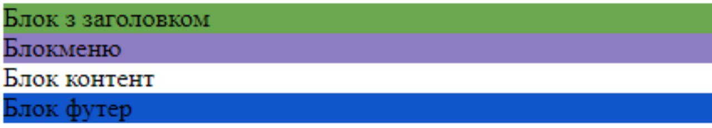
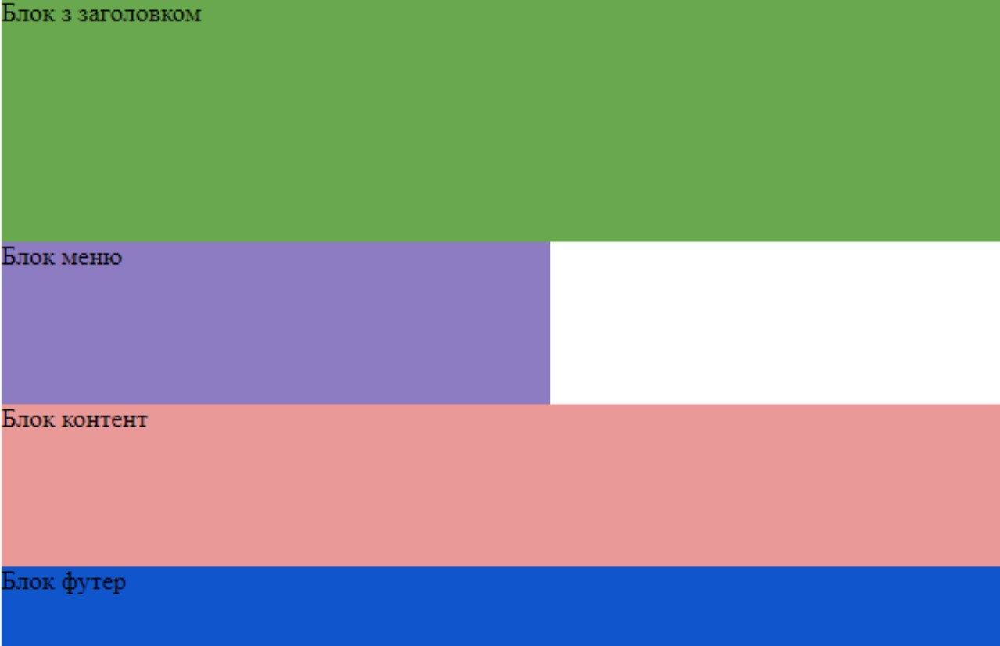
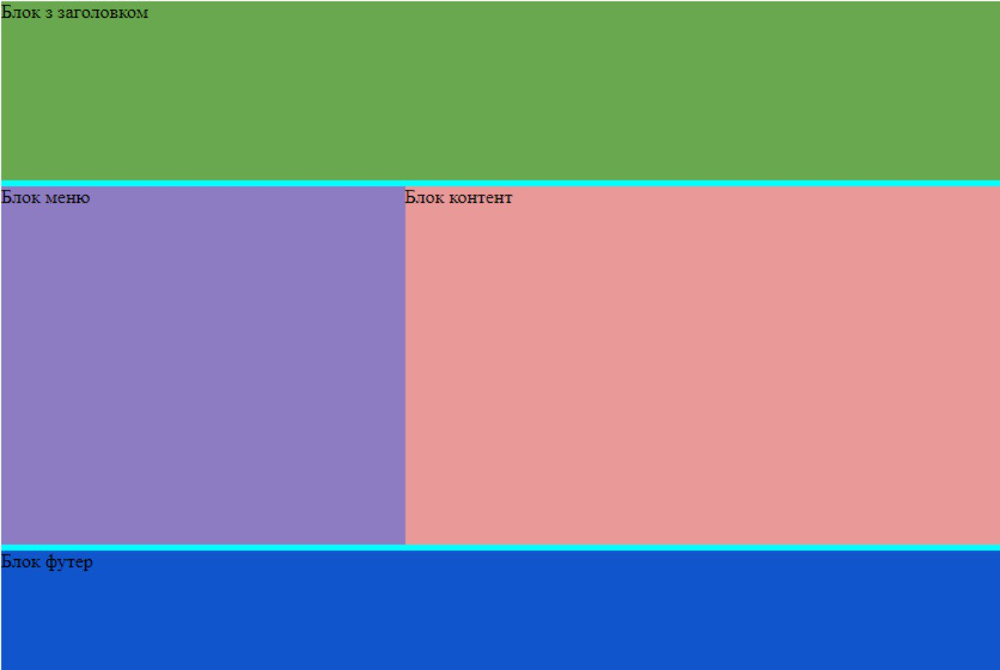
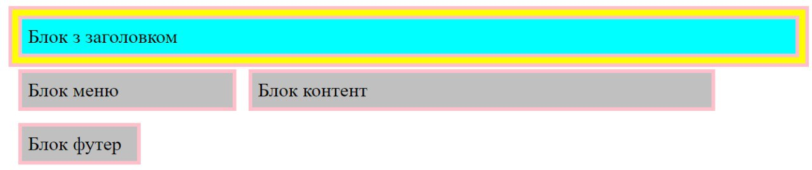
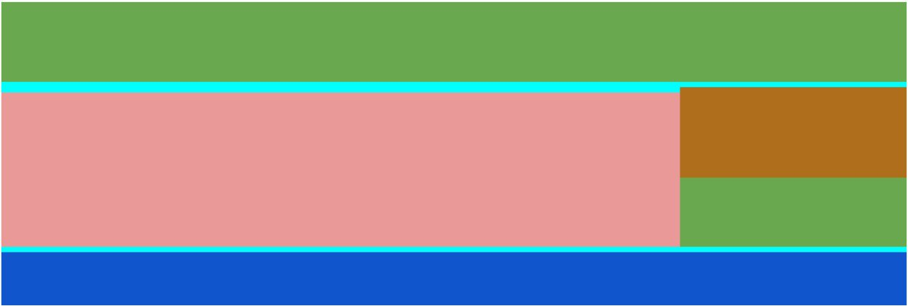

Етап 1. Налаштовуємо кольорову гамму всіх блоків

Етап 2. Налаштовуємо ширину та висоту об'єктів

Етап 3. Поставимо Блок з заголовком id="menu" та Блок контент id="content" поруч
Етап 4. Налаштовуємо відстань між частинами header, menu+content та footer

Індивідуальне завдання 1
Індивідуальне завдання 2